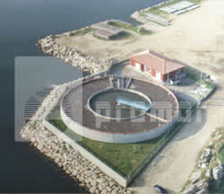
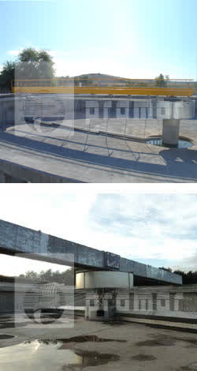
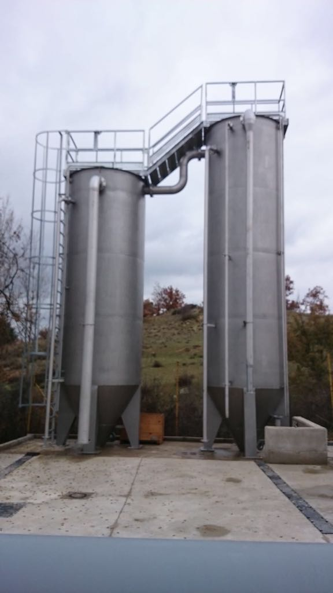
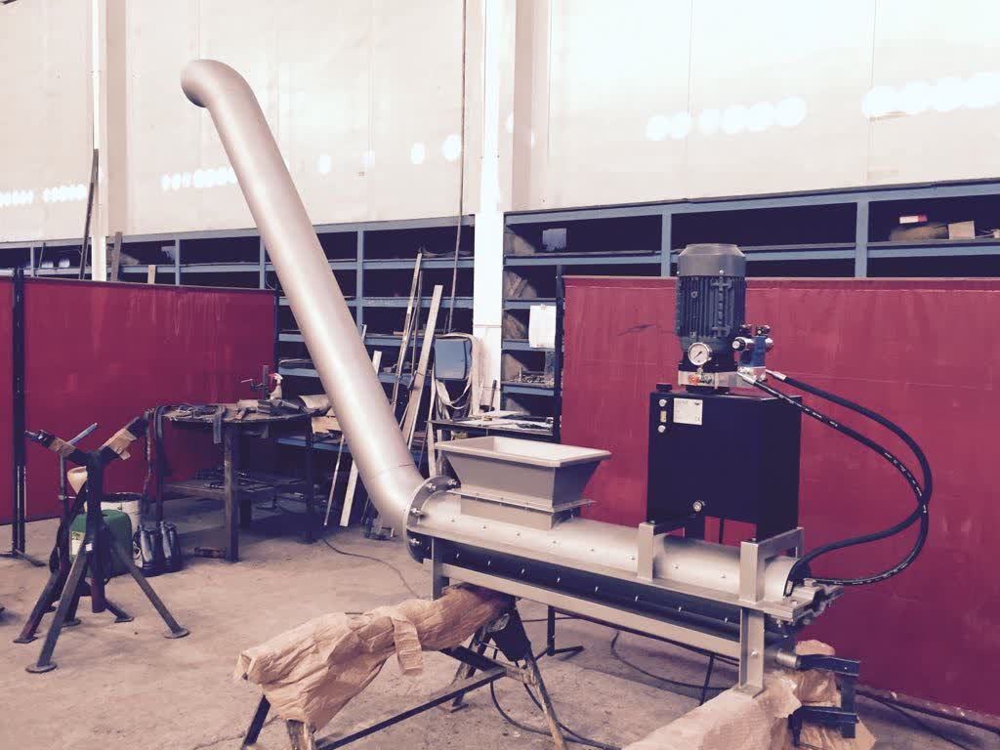
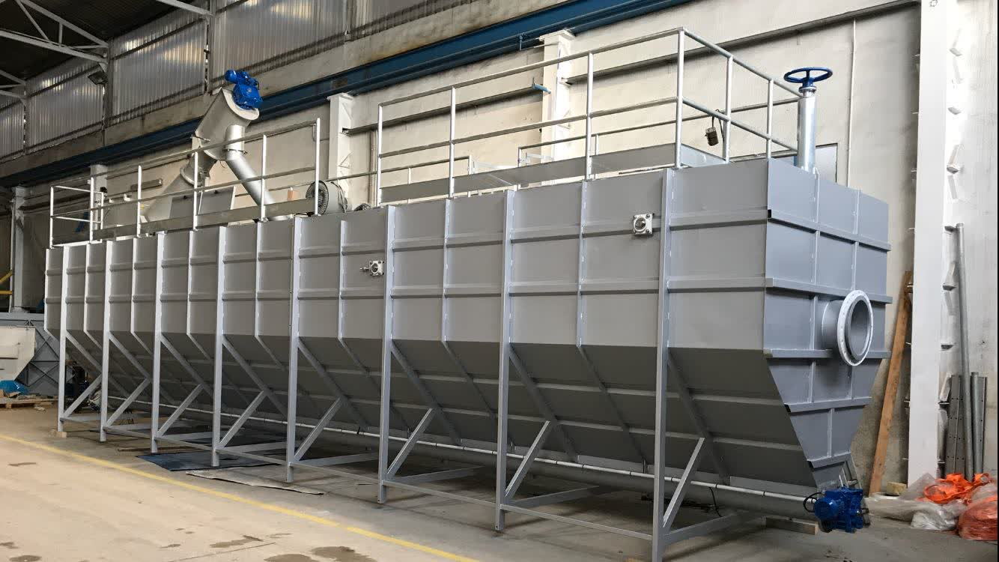
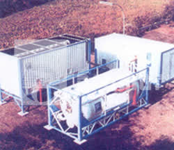

Diseñamos y fabricamos plantas y equipos para el tratamiento de aguas residuales urbanas e industriales, potabilización y desalación.

PRAMAR desarrolla dos líneas de producto complementarias para cubrir todo el espectro del tratamiento de aguas:
Estaciones compactas de depuración y potabilización, diseñadas para un funcionamiento autonomo con mínimo mantenimiento.
depuración biológica por aireación prolongada. De 15 a 700 habitantes equivalentes.
depuración con turbina de aireación. De 50 a 3.000 habitantes equivalentes.
Oxidación total con discos biológicos. De 800 a 5.000 habitantes equivalentes.
Tratamiento fisicoquímico con decantación laminar para aguas industriales.
Tratamiento fisicoquímico con flotacion por aire disuelto (DAF).
filtración avanzada para potabilización con lechos filtrantes.
potabilización integral con clarificación, filtración y desinfección.

Fabricamos la gama completa de equipos para la primera etapa del tratamiento de aguas:
Fabricamos equipos para las etapas biologicas, de decantación y de tratamiento de fangos.
Turbinas de aireación superficial, reactores de lecho bacteriano y sistemas de oxidacion biológica.
Decantadores laminares con tecnología Accelator, espesadores de fangos y flotadores DAF.
Filtros de arena, filtros de malla autolimpiantes, gasómetros metálicos, tolvas, silos y compuertas.




Contacte con nuestro departamento comercial para estudiar su proyecto y ofrecerle la solución de tratamiento de aguas más adecuada.